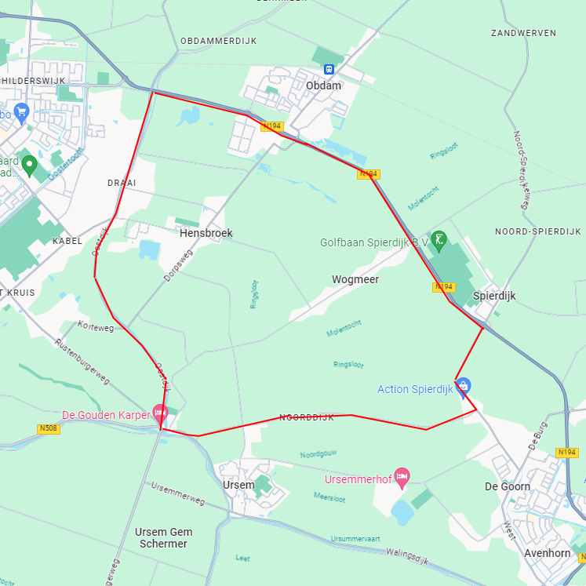
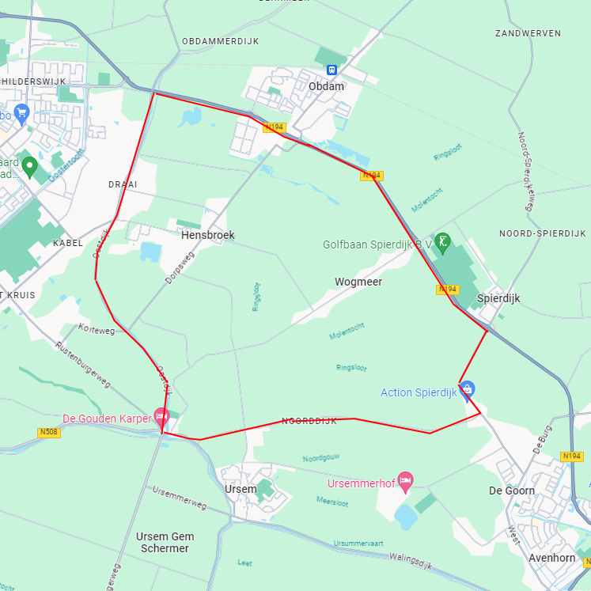

Route Polder
 

Afstand: 15.5km
Advanced
1uur 40minuten
Beschrijving
Naast Heerhugowaard liggen veel kleine dorpjes met daar omheen veel platteland. Dit soort kleine dorpjes en natuurrijke gebieden zijn aantrekkelijk voor de ervarende hardlopers. Deze route is 15.5km lang en dus bedoeld voor de sterke ervarende hardlopers met een goede conditie. Deze route is geschikt om in het donker te belopen, de wegen zijn goed belicht en het is erg rustig qua verkeer.
Klik hier om de route te openen naar het begin van deze hardlooproute Klik hier om de hardlooproute te openen in Google Maps